Branding set created for use by the Digital Futures Lab (DFL) at the University of Tennessee, Knoxville.
Alongside my duties mantaining the space and its video and VR equipment, I created a logo, type system,
screen savers, and additional documentation to help any visitors who wish to check out equipment or use the space.
Website updates currently in development.
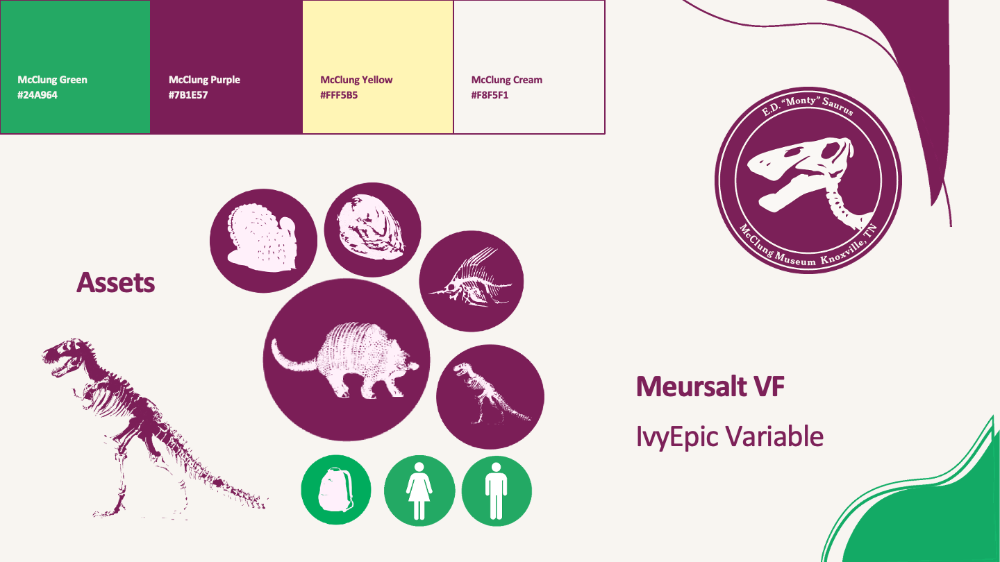
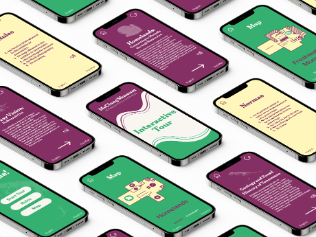
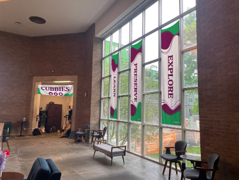
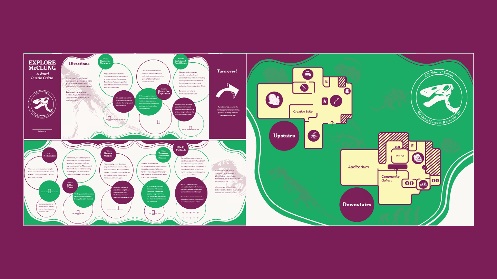
McClung Orientation and Wayfinding
Team project aimed at improving current signage and encouraging visitors to explore the space.
Our focus was on making the space feel inviting and easy to navigate. This was met by creating a small interactive map,
adding banners that promoted current exhibits, editing existing signage to make locations like the help desk and cubbies easier to find,
and a small quest that took the form of a puzzle map for young visitors.
The goal of the puzzle map was to get visitors to check out every exhibit in the museum.
When completed, they could check their answers at the welcome desk and receive a McClung button with their mascot, Monty, on it as a prize.
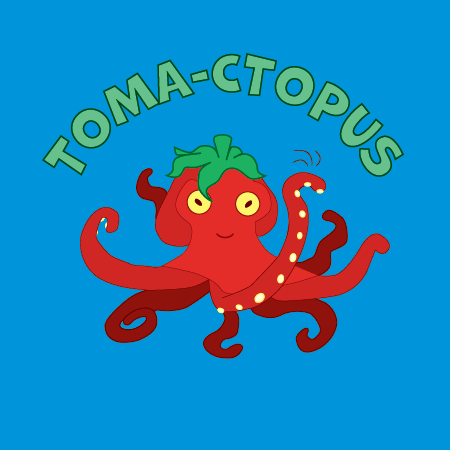
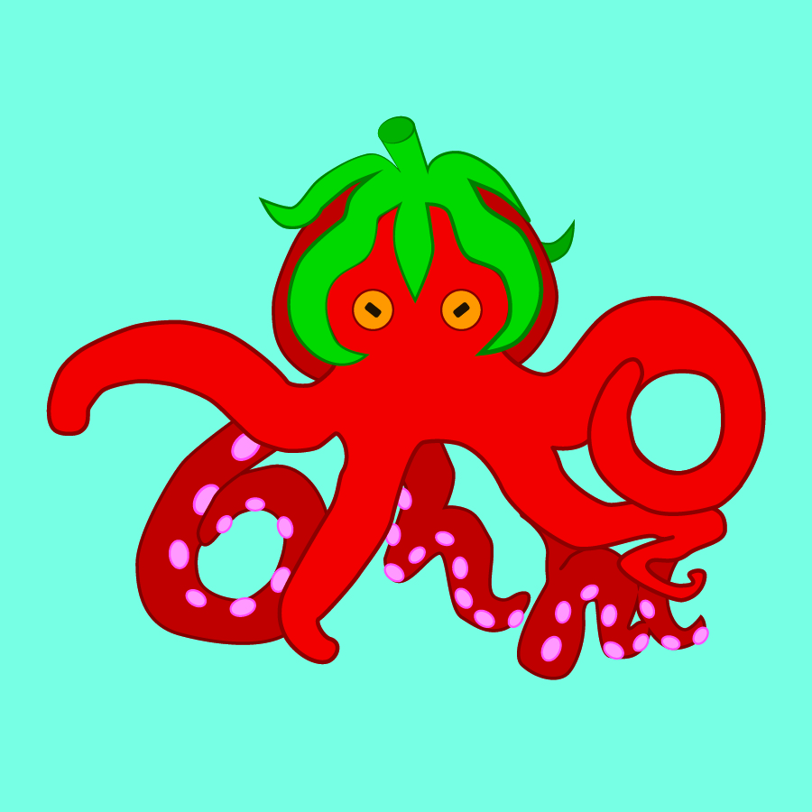
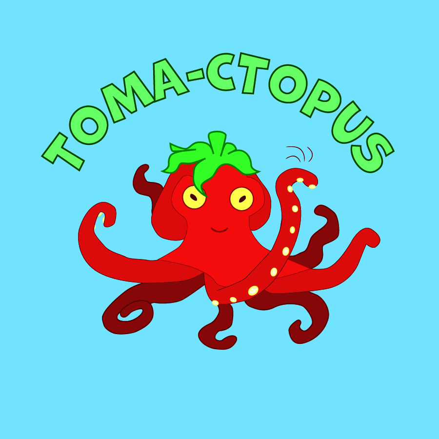
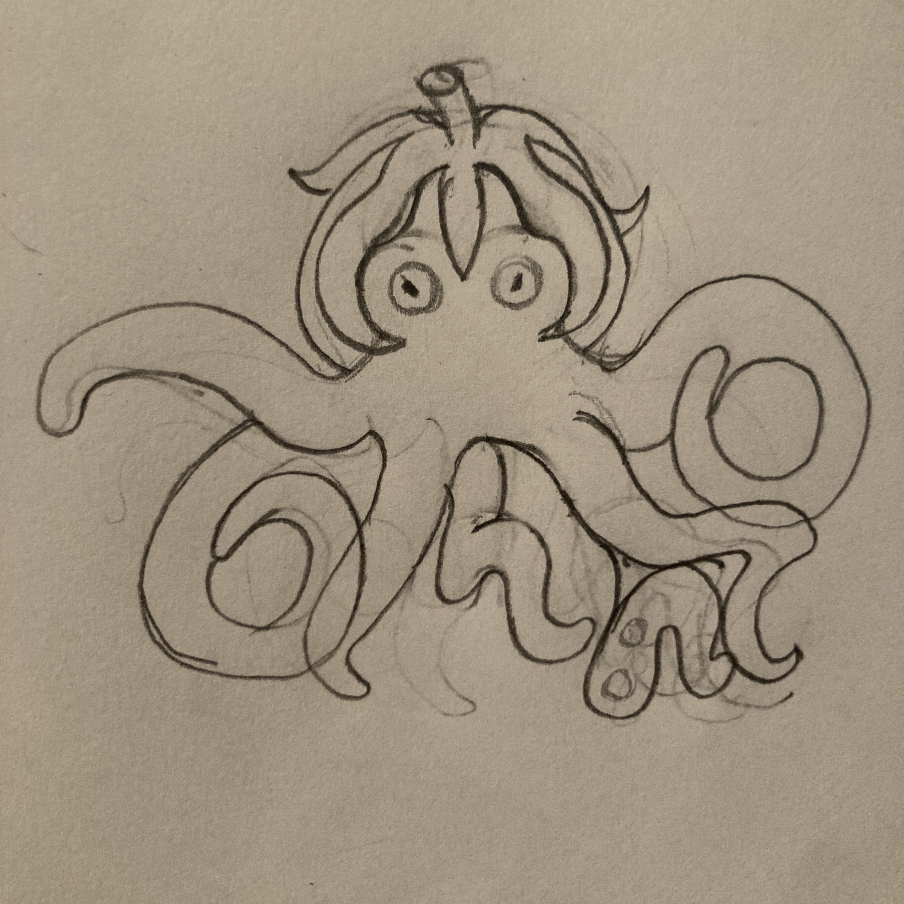
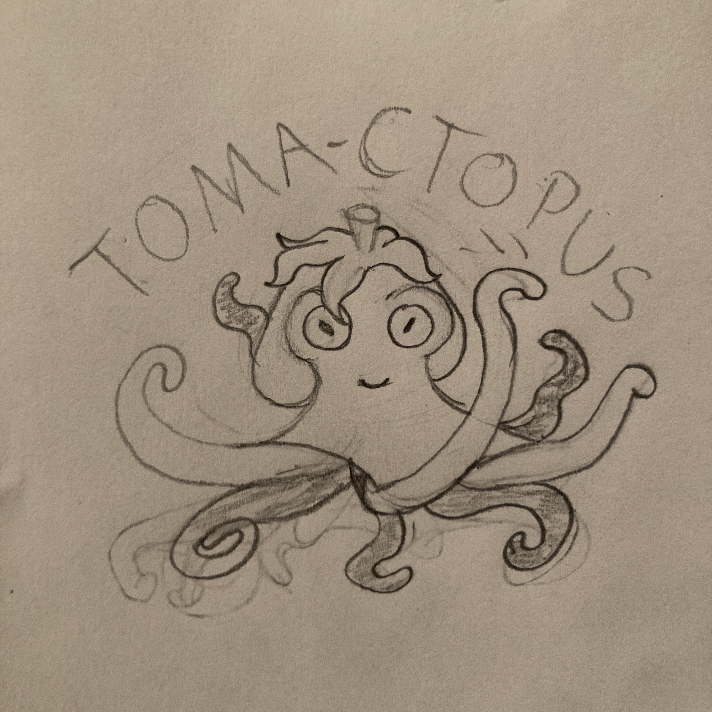
The Making of Tomactopus
What started as a last minute doodle to fill up a poster of tomato images for a content study became the coolest plush to ever exist.
Initial drawings were used to make button pins for our class trip to Chicago. Tomactopus became a quick favorite among the class.
When it was annouced that we would be making toys, it became a no-brainer.
I based the pattern off of a weighted goose plush that I had bought from Walmart, taking measurements
from the body to create a paper pattern. The back of the goose became the hanging head of Tomactopus,
and the goose’s neck and head became the model for the tentacles.
Fabric and stuffing was chosen to match the texture and feel of a Squishmallow plush.
He's officially the cosiest friend ever (childhood me would be ecstatic).
Some fun details include his embroidered eyes, magnetic leaf “hair”, and that he’s perfectly sized to fit on your head.
Pictured: Prototype images for buttons, initial sketches, early pattern tests and final plush.
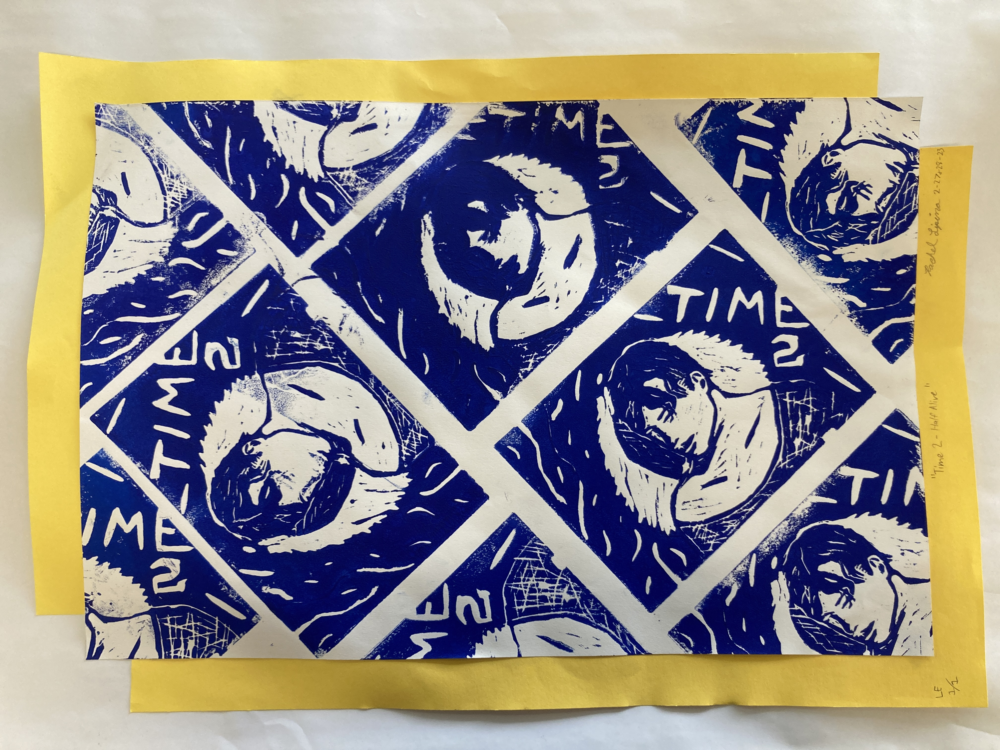
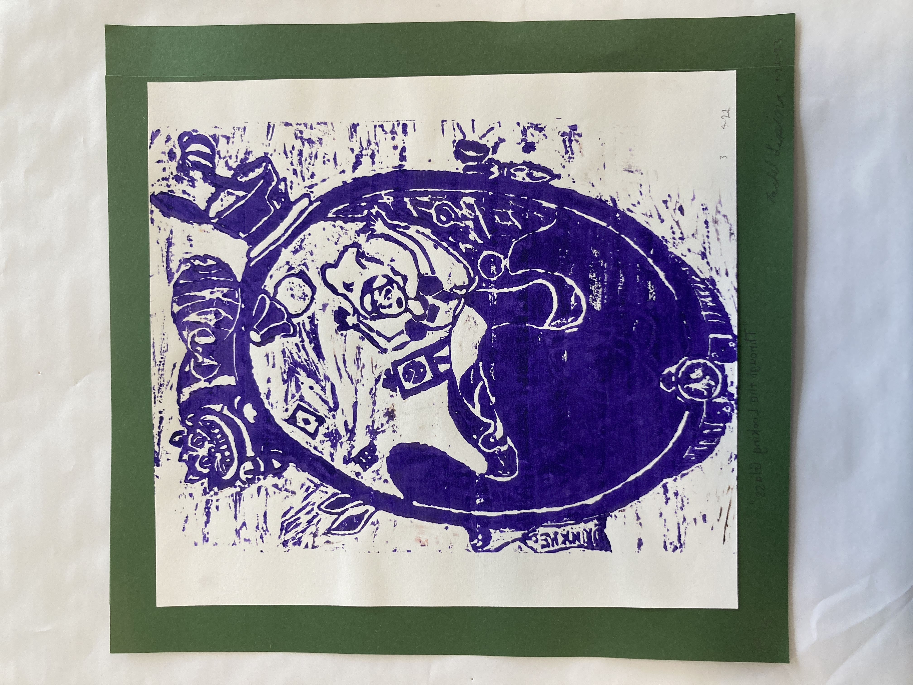
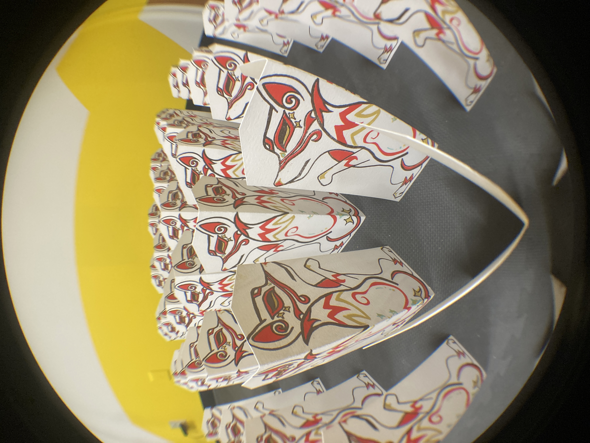
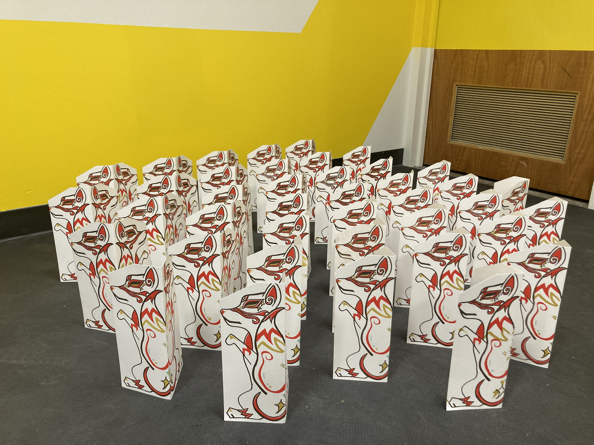
Printmaking
Various prints from high school and college printmaking classes. Exploration of various methods, mediums, and printing styles.
In order: "TIME2 - Half Alive", Linocut; "ssalG gnikooL eht hguorhT", Wood block relief;
Japanese Kitsune "Kamizumo" figures, Screen Print;
"Good Girl" and "Drama Queen" editions, Copper plate etching with hard ground, soft ground, and aquatint (progressive addition);
"Beige", Photopolymer etching and engraving; "Telemachus's Map", Copper plate etching with aquatint.
Typography Dominant Works
Projects focusing on typography usage and creating clean layouts, all from typography classes.
The first four images are from my Beginning Type class, while the Invitation Set was developed in my Advanced Type class.
The Avenir Specimen was inspired by its Swiss designer Adrian Frutiger, utilizing the cross and colors of the Swiss flag to creake a rigid, gridded layout.
Both the Recipe and Magazine Spreads were more focused on layout and ensuring legibility and maintaining a clear hierarchy.
The goal of the Invitation Set was to create a period piece that could have matched a party theme from the time we chose.
Having spent time in Virginia with an immense interest in U.S. History, I chose to look at the colonial period during the Revolutionary War.
Note: The Invitation Set's Numeric Dictionary is based on the original Culper Code Book used by Major Benjamin Tallmadge, as well as lore surrounding the Culper Ring.
Pictured: Avenir Type Specimen Poster, "Chill Finds" Magazine Spread,
Cookbook Recipe, Late 1700s Invitation Set (Culper Spy Ring).
Chicago Typography Book
On our class trip to Chicago, we were tasked with taking pictures of vernacular typography (type in the wild).
When we returned, we compiled our images and turned them into a spiral-bound book as a souvenir of our time there.
Every student book is unique: pictures taken by the individual are in color while those taken by other students
were left in black and white.
Given the chance to visit the top of Willis Tower on the trip, I thought it best to include one of my sunset pictures from the excursion.


.JPG)


.png)